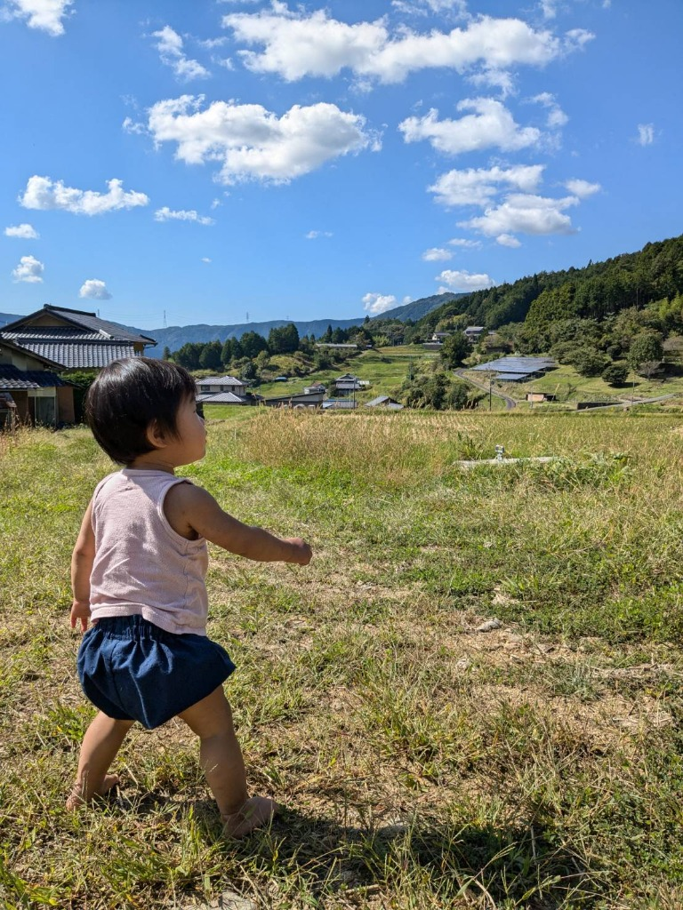
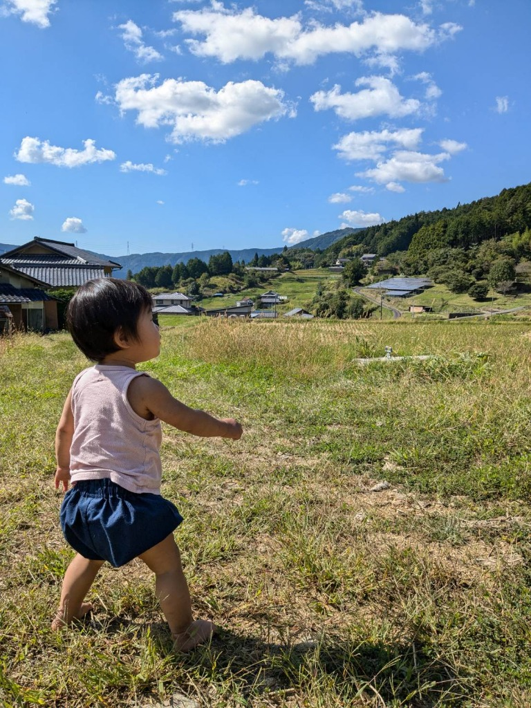

Nature's Blessing, Directly to You.
自然の恵み。
そのまま。
恵那から。
 

自然の恵み。
そのまま。
恵那から。
岐阜県恵那市、中野方町。
標高が高く、空の青さがどこまでも深いこの町は、
日本の原風景を今に伝える
「坂折棚田」で知られています。
昼夜の寒暖差が大きい気候は、
お米や野菜の旨味を
閉じ込めるために欠かせません。
静かで、美しく、厳しい自然。
手間暇を惜しまずに育てたお米は
ふっくらと甘みがあり
どこか懐かしい味わいです。
大地からの贈りもの
コシヒカリ
「毎日食べるものだから、一番安心できるものを。」
噛むほどに広がる、力強くも優しい甘みが特徴。
小さなお子様の初めてのご飯にもおすすめです。
古代米（黒米）
「スプーン一杯の、自然のサプリメント。」
いつもの白米に少し混ぜて炊くだけで
鮮やかな色彩と香ばしさをプラス。
ミネラル豊富な古代の知恵です。
黒米の美味しい食べ方いろいろ
黒米おにぎり
白米2合に対し、黒米大さじ1を入れて炊飯。
ほんのり桜色に染まったご飯は、
梅干しや塩昆布との相性が抜群です。
冷めてももちもちとした食感が楽しめます。
黒米甘酒ブルーベリースムージー
黒米甘酒の優しい甘さと、ブルーベリーの酸味が絶妙。
豆乳を加えてミキサーにかけるだけで、
飲む点滴とも言われる栄養満点の一杯に。
農園日誌
日々の農園の様子や想いは、
noteにて更新しています。
ただ、真っ直ぐに
作ること。
「知識がないからとりあえずやってみる」
2023年、家族とともに
中野方町へ移住してきました。
慣れない土地での農作業は、
自然の厳しさに直面することもあります。
それでも、泥だらけになって働く毎日に
充実感を感じるのは
「本物」の自然があるからだと思います。
米良氣農園 代表